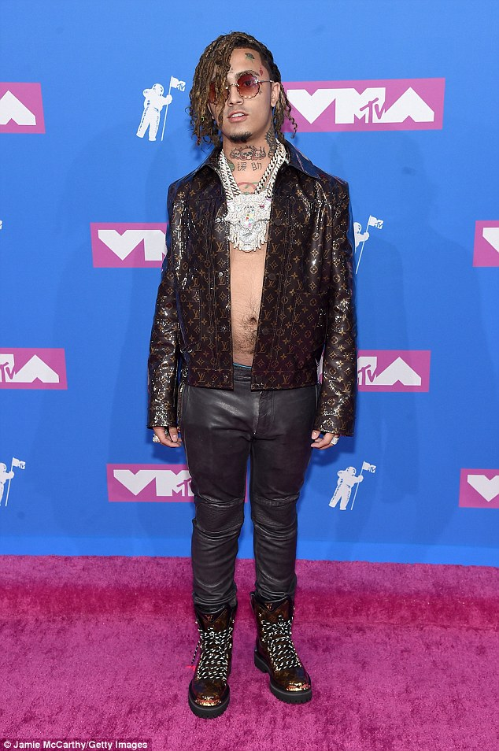
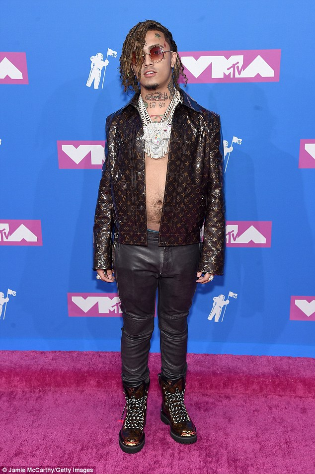

Models.
Las mejores fotos e informacion de la Moda urbana actual.
Lil Peep
Este es un modelo muy famoso que murio hace 1 año pero aun se conserva su estilo por lo bueno que era. Tenia un estilo muy oscuro ya que el casi nunca estaba de buen humor, a veces incluso se lo conocia por el nombre de modelo EMO xx).
xxxTentacion
Este modelo es aun mas famoso que el anterior ya que murio hace muy poco y su muerte se dio a conocer por todo el mundo. Tenia un estilo de la moda muy cargado (con muchas prendas), pero mas tarde decidio cambiar su estilo y pasar a uno con menos luces ya que a el le gustaba mas ese tipo de cosas.
Lil xan
Este modelo es uno de los mas famosos del momento en estados unidos ya que destaca porque siempre lleva un gorro de lana en la cabeza y nunca sew los quita. Tiene un estilo de vestimenta ligero ya que nunca lleva un chaqueton o muchas cadenas o cosas por el estilo si no que lleva una sudadera, una camiseta, unos vaqueros o chandal, y tenis.
Lil pump
Este joven modelo que apena tiene casi recien cumplidos la mayoria de edad se ha echo demasiado famoso para lo muy joven que es, esto se debe a su influencia en las redes sociales, pero tambiem se ha echo famoso por sus ropas tan lujosas que lleva y esque es muy raro ver a alguien tam joven con esa vida que tiene.
6ix9ine
Este modelo de 22 años, se ha vuelto muy famoso ultimamente debido a colavoraciones con otros modelos de alta fama. Este modelo viste con una variacion de colores tan extensa que parece un arcoiris andante ya que utiliza los colores de este. Fue metido hace poco metido en la carcel debido a sus conductas y no se sabe a ciencia cierta cuando saldra de ella.
Mis Skills como trabajador
Fotografo
Programador de webs
Diseñador
Mas fotos
 


Puedes contactar conmigo
Cartagena, España
josecarrascoo_
josecarrascoj.car@maristasmediterranea.com
Enviame un mensaje siguiendo lo pasos: